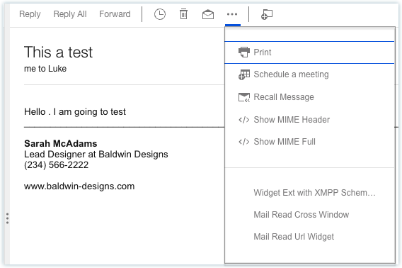
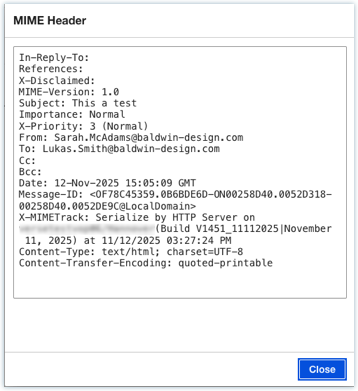
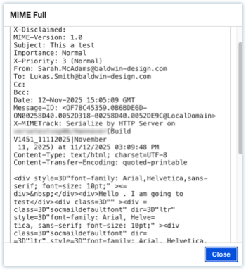

How to view MIME headers and MIME full content?
Click the ellipsis () icon on the received messages and click the Show MIME Header or Show MIME Full action.



Parent topic: How do I master mail?
Click the ellipsis () icon on the received messages and click the Show MIME Header or Show MIME Full action.



Parent topic: How do I master mail?